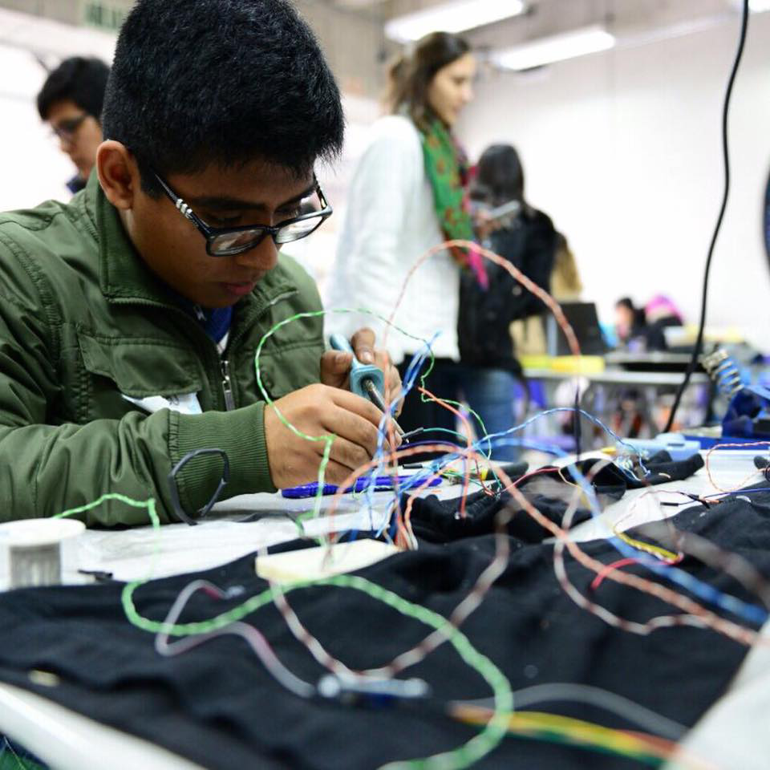

|  |
My storyHi! I’m Oscar. I’m a Peruvian engineer student. Since I was a child, I discovered my passion for science and technology. At school I participated in various robotics competitions and a science camp at the University of San Diego (UCSD), California, USA. These experiences lead me to choose the studies of mechatronics at the University of Engineering and Technology (UTEC). I like to learn self-taught on various topics of interest, ranging from aerospace technology, robotics, machine learning and computer vision, PCB design, optimization of mechanisms, to graphic design, economics and several other different topics. I think that something important as an engineer is to dare to create and be creative, that's why together with some friends we founded GIIT Robotics, an organization that allows more students to learn, share and design ideas focused on robotics. I have been at university for four years and so far I have participated in the development of various projects such as a bioprinter, design of a flight simulator, autonomous vehicles and now lastly in the construction of an underwater robot together with the GIIT Robotics team. Since then, I am continuing my career in the research and development of robotic applications (see also my CV). Outside of engineering, I like to dance. I enjoy running in the mornings and riding my bike on Sundays. I read in the mornings when most are sleeping. I draw in any notebook I have. I highly value discipline, determination, loyalty, and kindness and strive to live by these values in my daily life. |